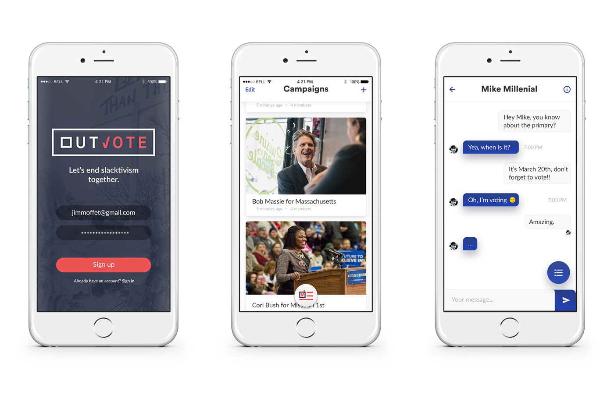
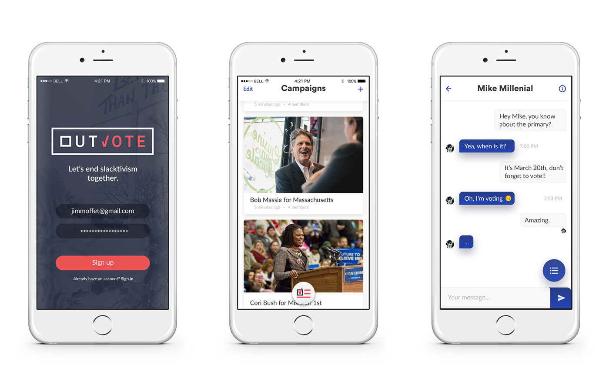

Outvote.io
Bringing word-of-mouth democracy back using SMS and AI
 

I joined the Outvote team when my civtech startup COMM!T was acquired in mid-2017, taking up residence as Director of User Experience, but wearing plenty of hats as we grew from 2 to 5 employees. I have guided the team through the Harvard iLab accelerator, directed an agile squad of freelance user researchers and designers, committed front-end and back-end code, pitched funders, built sales and growth outreach and designed product demos.
Collections
Research
Product
Civic Tech
Collection Credits
Boston FOIA Redesign
James Moffet
Erica Pincus
Jon Truong
Thad Kerosky
Jackie Chea
Outvote App
James Moffet
Nadeem Mazen
Naseem Makiya
Lizzie Devane
Critical Mass
James Moffet
Morgan Starkey
Alexander Tepper
All Else
James Moffet